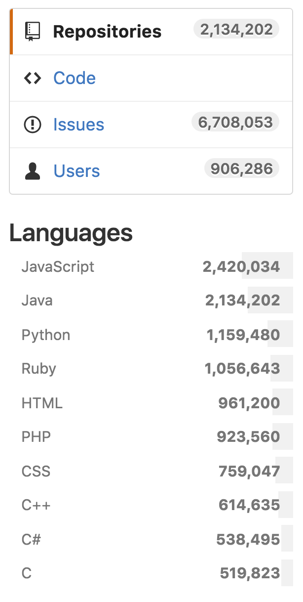
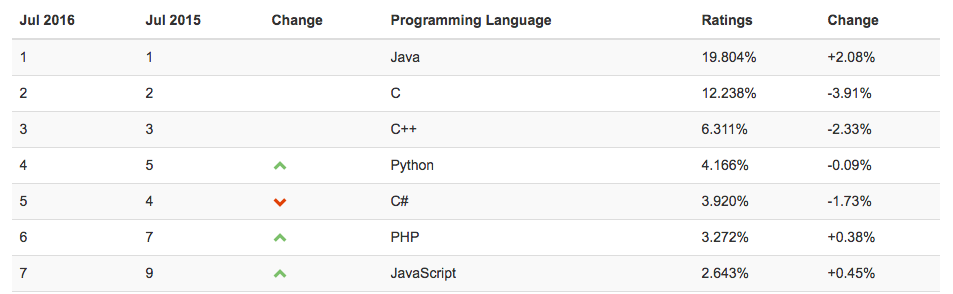

The Java Ecosystem

About Me
Gregg Bolinger
- Software Engineer / Architect @ High Touch Technologies
- Software Engineering Consultant for 7 years
- 15 Years in Software Development
- Java first language for professional purposes
- Tabletop Gamer
- www.greggbolinger.com
- @gdbolinger
Purpose of Java Talks
Find the Community
Grow the Community
Start A Discussion
Interactive
Prove Nothing
Java != JavaScript
Mocha
LiveScript
JavaScript because Java was so popular
Complimentary to Java
Still, not Java.
Applets Suck
I will not discuss Applets
Ever.
Brief History
Father of Java
James Gosling - Sun Microsystems
No Relation to Ryan Gosling
Releases
1.0 Released Jan 23, 1996 - Called Oak
1.0.2 Released Same year. First stable version. Renamed Java
Current Release - JDK 8u101
9 scheduled for 2017
Yes, Java was named after coffee
Oak
Silk
Lyric
Pepper
NetProse
Neon
Oracle Aquired Sun Microsystems in 2010
Community Reaction
Relevance of Java
Java is Everywhere
Seriously, it's everywhere
You should be worried
Not really. Java is pretty cool
From oracle.com
- 97% of Enterprise Desktops Run Java
- 89% of Desktops (or Computers) in the U.S. Run Java
- 9 Million Java Developers Worldwide
- #1 Choice for Developers
- #1 Development Platform
- 3 Billion Mobile Phones Run Java
- 100% of Blu-ray Disc Players Ship with Java
- 5 Billion Java Cards in Use
- 125 million TV devices run Java
Github Projects
Jobs
indeed.com - 78,958
linkedin.com/jobs - 54,410
careerbuilder.com - 2500+
Average Salaries
payscale.com - $70,772
indeed.com/salary - $102,000
TIOBE
The TIOBE Programming Community index is an indicator of the popularity of programming languages.
Who's Using Java?
Wichita
High Touch Technologies
Golf Warehouse
Koch
Spirit
NetApp
Applianz
SNT Media
Kansas City
Garmin
H&R Block
DST
Barkley
VML
Cerner
Federal Reserve
UMB Bank
Commerce Bank
Net Smart
(Inter)national Big Names
Netflix
Amazon
Microsoft
IBM
Oracle
Games
Minecraft
League of Legends
RuneScape
Puzzle Pirates
Let's Talk About Why
The Platform / Java Virtual Machine
WARNING: Boring Techy Stuff Ahead
Java is compiled into Bytecode
Bytecode is interpreted at runtime and executed
Just In Time (JIT) Compiler compiles Bytecode to machine code on the fly and is cached
In some cases, JIT has outperformed native C / C++ code in execution speeds
The Platform / Java Virtual Machine
public class HelloWorld {
public static void main(String[] args) {
System.out.println("Hello, World");
}
}
The Platform / Java Virtual Machine
Bytecode Schmytecode
Platform Independent
Compile Once, Run Anywhere
Except when you can't
Multiple Languages
Languages That Run on the JVM
Java
Groovy
Closure
Kotlin
Scala
jRuby
jPython
BeanShell
JavaScript (Nashorn)
API's / Libraries / Frameworks
1,451,000+ Artifacts on Maven Repository
API's / Libraries / Frameworks
IoC
MVC
Data
Cache
Cloud
API's / Libraries / Frameworks
| Grails | Vert.x | Joda Time | Apache Pivot |
| Spark | Tapestry | Swing | SWT |
| Play | Struts | H2 | Netty |
| JSF | Guice | Vaadin | JDom |
| Jackson | Hibernate | Wicket | JFreeChart |
| JUnit | Spock | Dropwizard | Log4J |
API's / Libraries / Frameworks
Android
API's / Libraries / Frameworks
Gaming
LWJGL
JMonkey Engine
Slick2D
libGDX
Java3D (deprecated)
Tools / Products
Tools / Products
IDE's

Tools / Products
| Gradle | Maven | Hadoop |
| Ant | Jenkins | JMeter |
| Tomcat | Wildfly (JBoss) | Neo4J |
| Weblogic | Websphere | CouchDB |
| Jetty | Glassfish | JProfiler |
Myths
Java is slow
Oracle will ruin Java
I don't have to worry about memory
Java is the best choice for everything
The Community
Stackoverflow - 1,105,663 tagged questions
CodeRanch.com - 335K users, 662K threads, 30M posts
Java Books - 4,870 (Amazon)
devICT Slack #java Channel - 30 members
"How Can I Give a Java Talk?"
Pick a topic, talk about it